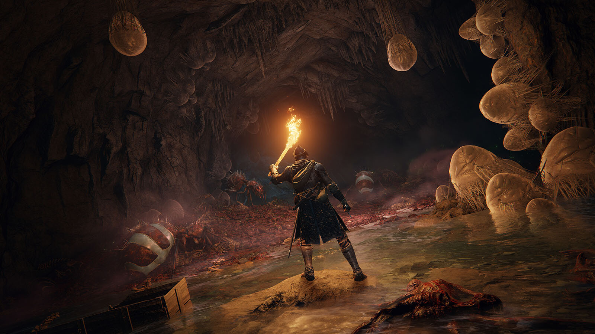

Dans ce forum, vous allez en apprendre plus sur Elden Ring, le jeu de l'année 2022, par From Software et créé par Hidetaka Miyazaki et George R.R. Martin, ainsi que la Fourme, le fromage.
Bienvenue,
Nous sommes le
Vous vous êtes connecté à
Dans ce forum, vous allez en apprendre plus sur Elden Ring, le jeu de l'année 2022, par From Software et créé par Hidetaka Miyazaki et George R.R. Martin, ainsi que la Fourme, le fromage.